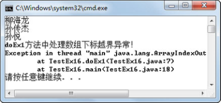
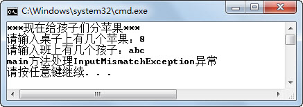

1.4 抛出异常
异常处理学习到现在，所有的异常都是由系统抛出。作为程序员，有时需要手工抛出一个异常，让异常处理程序进行处理。接下来将学习如果使用throw关键字手工抛出异常。
1.4.1 手工抛出异常
在Java语言中，可以使用throw关键字手工抛出一个异常，手工抛出异常的语法形式为：
throw 异常对象;
例如，手工抛出一个算数异常的代码为：
throw new ArithmeticException();
观察下面的代码，通过throw new NullPointerException("the ");语句，手工抛出了一个空指针异常，指定信息为“the ”。catch语句块对空指针异常进行捕获，输出异常对象e.getMessage()的值（“the ”），程序运行结果如图1.17所示。
public class TestEx15
{
public static void main(String[] args)
{
System.out.print("Now ");
try{
System.out.print("is ");
throw new NullPointerException("the "); //抛出一个空指针异常，指定信息为“the”
//System.out.print("此句不会被执行!");
}catch(NullPointerException e){ //捕获抛出的空指针异常
System.out.print(e.getMessage());
}
System.out.print("time. \n");
}
}

图1.17 手工抛出异常
1.4.2 再次抛出异常
catch语句捕获到的异常对象e，在catch语句块的处理程序中，可以使用throw e;语句再次将这个异常抛出，以便它能被外部catch语句捕获。再次抛出异常最常见的情况是允许多个程序处理一个异常。例如，需要一个异常处理代码块处理异常的一个方面，另一个异常处理代码块处理另一个方面，则可以在一个异常处理代码块处理完毕之后再次抛出该异常，让另一个异常处理代码块继续进行处理。通过下面的代码可熟悉如何在两个方法中处理同一个异常。
public class TestEx16{
public static void doEx1()
{
try{
String teachers[]={"柳海龙","孙传杰","孙悦"};
for(int i = 0;i < 4;i++){
System.out.println(teachers[i]);
}
}catch(ArrayIndexOutOfBoundsException e) //捕获数组下标越界异常
{
System.out.println("doEx1方法中处理数组下标越界异常！");
throw e; //再次抛出该数组下标越界异常
}
}
public static void main(String[] args)
{
try{
doEx1();
}catch(ArrayIndexOutOfBoundsException e) //再次捕获数组下标越界异常
{
System.out.println("main方法中处理数组下标越界异常！");
}finally{
System.out.println("程序结束！");
}
}
}
在该段程序中，doEx1()方法中的异常处理代码块捕获并处理了数组下标越界异常，在处理结束后，又将该异常抛出给调用doEx1()方法的main()方法进行异常处理，main()方法中的异常处理代码块又捕获处理了数组下标越界异常。程序运行结果如图1.18所示。

图1.18 再次抛出异常
数组下标越界异常属于运行时异常，所以main()方法在调用这个需要抛出数组下标越界异常的doEx1()方法时，即使不对这个抛出的异常进行捕获处理，也能编译通过，只是在运行时会抛出异常而已。去掉main()方法中的异常处理程序，只保留对doEx1()方法的调用，编译、运行程序，程序运行结果如图1.19所示。通过程序运行结果可以看出，在doEx1()方法中的捕获处理代码得到了运行，main()方法未捕获处理抛出的异常，所以运行时抛出异常。

图1.19 运行时异常抛出不捕获处理
1.4.3 抛出检查时异常
前面介绍检查时异常的时候提到过，检查时异常要求程序员必须在程序中对异常进行捕获处理，否则程序不能编译通过。还是刚才的程序结构，只是doEx1()方法里抛出的异常不再是运行时异常，而是检查时异常，会出现什么样的结果呢？程序代码如下：
import java.net.*;
import java.io.*;
public class TestEx17{
public static ServerSocket ss = null;
public static void doEx1()
{
try {
ss = new ServerSocket(5678);
Socket socket = ss.accept();
}catch (IOException e) { //捕获IOException异常
System.out.println("doEx1方法中处理IOException异常！");
throw e; //再次抛出该IOException异常
}
}
public static void main(String[] args)
{
try{
doEx1();
}catch(IOException e) //再次捕获IOException异常
{
System.out.println("main方法中处理IOException异常！");
}finally{
System.out.println("程序结束！");
}
}
}
编译程序，编译器报错，如图1.20所示。

图1.20 检查时异常抛出不捕获
仔细查看错误原因，提示为throw e;语句抛出一个检查时异常，必须要对其进行捕捉或声明以便抛出。该程序的目的就是再次抛出该异常，让调用doEx1()方法的main()方法再次进行异常捕获处理，所以如果在doEx1()方法里继续进行捕获则失去了该程序的定义。如何解决这个问题呢？接下来我们通过声明方法抛出异常的方式，处理这个问题。
1.4.4 声明方法抛出异常
所谓声明方法抛出异常，就是当方法本身不知道或者不愿意处理某个可能抛出的异常时，可以选择用throws关键字将该异常提交给调用该方法的方法进行处理。当这个异常是检查时异常时，该方法必须进行声明，调用该方法的方法必须进行处理或再次声明向外抛出。声明方法抛出异常很简单，需要在方法的参数列表之后，在方法体的大括号前，增加“throws异常列表”进行声明。
修改前面的代码，在doEx1()后增加throws IOException，声明doEx1()方法可能抛出IOException异常，因为在main()方法中已有对IOException异常的捕获和处理代码，所以程序可以编译通过。
在此可使用声明方法抛出异常的方式，处理“给孩子们分苹果”的程序中，孩子数输入不能转换为数字的字符时的问题，具体代码如下：
import java.util.*; //InputMismatchException在java.util包下
public class TestEx18{
//抛出InputMismatchException异常，自己不处理，让方法的直接调用者来处理
private static void p() throws InputMismatchException {
int appleNum = 0; //苹果数
int stuNum = 0; //学生数
System.out.println("***现在给孩子们分苹果***");
Scanner input = new Scanner(System.in);
System.out.print("请输入桌子上有几个苹果：");
appleNum = input.nextInt();
System.out.print("请输入班上有几个孩子：");
stuNum = input.nextInt(); //用户输入“abc”，则系统会抛出InputMismatchException异常
System.out.println("班上每个孩子分得多少苹果：" + appleNum/stuNum);
System.out.println("孩子们非常开心！");
}
public static void main(String args[]){
try{
p(); //方法的直接调用者捕获、处理异常
}catch(InputMismatchException e) {
System.out.println("main方法处理InputMismatchException异常");
}
}
}
p()方法声明该方法可能抛出InputMismatchException异常，调用p()方法的main()方法处理了p()方法中不处理并声明抛出的这个异常。程序运行结果如图1.21所示。

图1.21 声明方法抛出异常